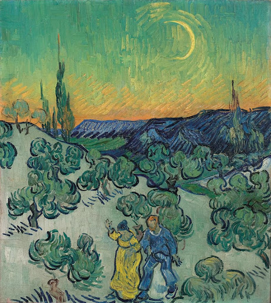
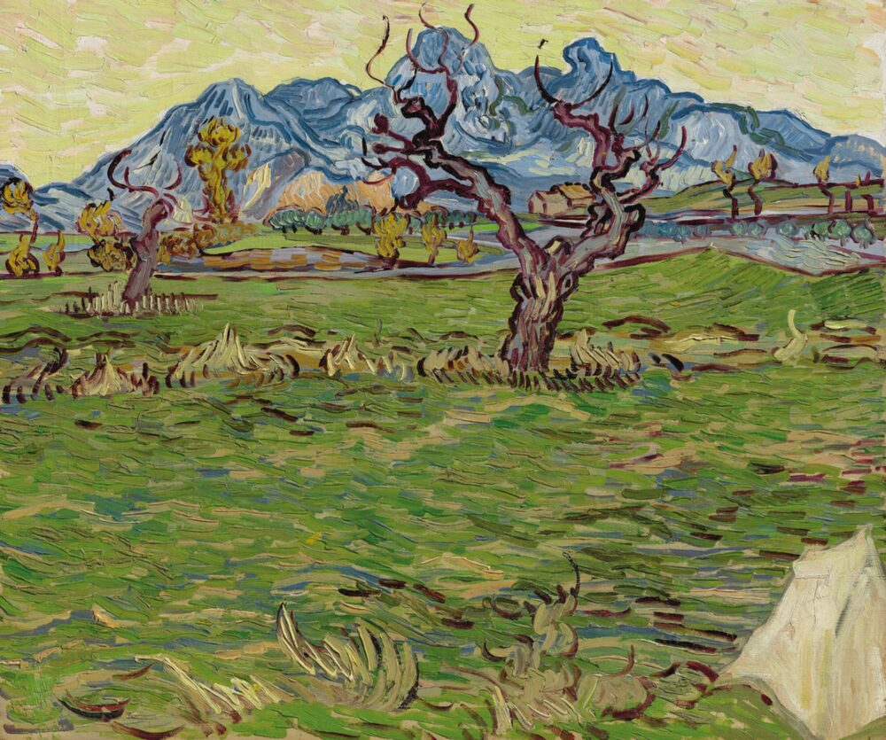
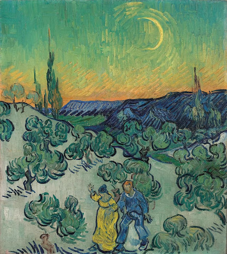
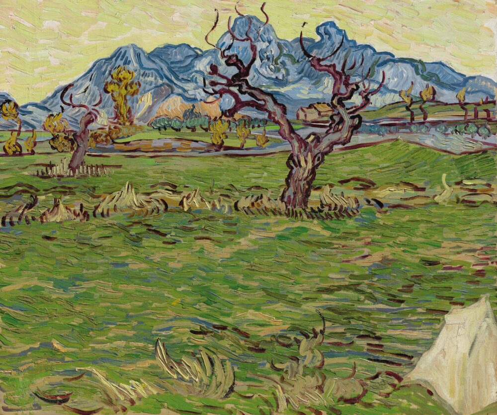

Vincent Van Gogh
Fu autore di quasi novecento dipinti[1] e di più di mille disegni, senza contare i numerosi schizzi non portati a termine e i tanti appunti destinati probabilmente all'imitazione di disegni artistici di provenienza giapponese. Tanto geniale quanto incompreso se non addirittura disprezzato in vita, Van Gogh influenzò l'arte del XXI secolo. Iniziò a disegnare da bambino e nonostante le critiche del padre, un pastore protestante che gli impartiva delle norme severe, continuò a interessarsi all'arte finché non decise di diventare un pittore vero e proprio.
 


